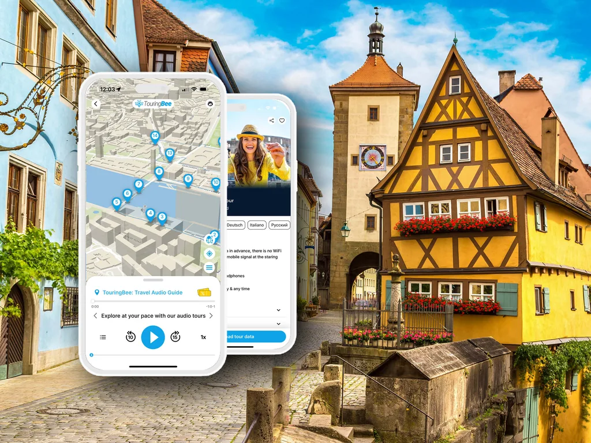

La ronda del Vigilante Nocturno de Rothenburg: qué esperar
Dos rondas, no una. Cómo es esa hora de verdad y cómo colocarse donde se oye.
Consiga la audioguía La hora Respuestas rápidasEl vigilante nocturno de Rothenburg sale del arco del ayuntamiento a las ocho de la tarde con capa negra y tricornio, farol y alabarda, y durante la hora siguiente lleva a un grupo de desconocidos por los callejones contándoles cómo era vivir aquí cuando su oficio existía de verdad.
Es una de las cosas más conocidas que hacer en Rothenburg al caer la noche, y el hombre que la hizo famosa la lleva haciendo más de treinta años. También es, en lo que afecta a su velada, algo distinto de lo que sugieren las fotografías.
Esta página trata de si ir o no, de cuál de las dos rondas elegir y de cómo acabar en un sitio donde de verdad se oiga. Lo que cuenta el vigilante es cosa suya, y esta página no lo repite.
¿Planifica el resto del viaje? Empiece por la guía completa de Rothenburg ob der Tauber, o por la ruta a pie autoguiada y gratis para la mitad diurna.
De un vistazo
- Ronda en inglés
- 20:00 · 9 € adultos · 4,50 € menores de 18 · gratis menores de 12
- Ronda en alemán
- 21:30 · 8 € adultos · 4 € menores de 18 · gratis menores de 12
- Punto de encuentro
- Marktplatz, delante del ayuntamiento. Sin reserva
- Duración
- Alrededor de una hora, sobre adoquín, en parte a oscuras
- Pago
- Efectivo, entregado al vigilante al empezar
- Tamaño del grupo
- Grande en la ronda en inglés — cincuenta es lo normal, en verano llega a cien. Menor en alemán
Cómo es esa hora de verdad
Es un espectáculo, no una visita guiada de arquitectura. El vigilante no sale del personaje en toda la hora: la capa, el farol, la alabarda que golpea contra el adoquín para dar énfasis y una sucesión constante de chistes con el tempo de quien los ha contado varios miles de veces.
El recorrido sale del Marktplatz, se mete por los callejones laterales lejos de las calles iluminadas, pasa junto a la muralla y por el borde del jardín del castillo y termina a unos minutos a pie de donde empezó. No se entra en ningún sitio y no hay nada que subir más allá de algún tramo de escalones. Es llano para lo que es Rothenburg, pero es una hora de pie y andando sobre adoquín medieval a oscuras.
Lo que se saca de aquí es ambiente y un placer muy concreto: el sonido de una alabarda sobre el adoquín de un callejón sin luz le despega del presente mejor que cualquier cartela de museo. Lo que no se saca es una historia ordenada de la ciudad. No es un defecto — es lo que la cosa es — pero conviene saberlo antes de comprarla como su único contexto sobre Rothenburg.
El grupo es la variable de verdad
Esta es la parte que la mayoría de las páginas no cuenta. La ronda acepta a quien aparezca y, en temporada alta, el grupo en inglés llega con frecuencia a cincuenta personas, a veces al doble.
El vigilante proyecta bien la voz y conoce la acústica de cada parada. Pero cien personas se estiran por un callejón más de lo que llega una voz, y la cola del grupo compite con campanas de iglesia, terrazas de café y algún coche. La queja más habitual sobre esta ronda es no conseguir oírla.
Así que: llegue diez minutos antes, colóquese cerca de la cabeza y arranque cuando lo haga él, en vez de descolgarse hacia atrás. Si está detrás cuando empieza a hablar, estará detrás toda la velada — el grupo tiende a recomponerse en el mismo orden en cada parada.
La temporada media y la ronda en alemán son más tranquilas. Un martes de lluvia en marzo es otra velada que un sábado de julio.
En inglés a las 20:00 o en alemán a las 21:30
Son dos rondas distintas, y la elección es menos obvia de lo que parece.
La ronda en inglés, 20:00, 9 €. El grupo más grande, el guion más pulido y la que apunta de lleno al visitante. Los chistes están hechos para un público internacional. De finales de mayo a principios de agosto empieza con luz de día, lo que le quita parte del ambiente.
La ronda en alemán, 21:30, 8 €. Más pequeña, más tarde y ya bien oscura la mayor parte del año. Si su alemán es decente, esta es la mejor hora — menos gente, y a esas horas la ciudad está realmente vacía. Si no lo es, seguirá la forma de la cosa y se perderá los chistes, que son casi todo.
Las dos son solo efectivo, entregado al empezar: sin taquilla, sin reserva, sin entrada.
El vigilante va a cambiar
Hans Georg Baumgartner es el hombre de la mayoría de las fotografías del vigilante nocturno de Rothenburg. Su última ronda es el 31 de octubre de 2026.
La ronda en sí no se acaba. Colegas del equipo de vigilantes nocturnos ya llevan las noches que él no hace — miércoles, jueves y domingos — y cubren el resto de 2026 cuando lo deje, Adviento incluido. La oficina de turismo busca un nuevo vigilante nocturno para empezar en abril de 2027.
En la práctica: si viene antes de noviembre de 2026 y quiere al vigilante famoso, mire el día de la semana. Si viene después, tendrá una ronda competente de otra persona, y cómo será el nuevo vigilante a partir de abril de 2027 todavía no se sabe.
El vigilante le da el ambiente. La audioguía le da los datos. 25 paradas, unos 90 minutos, sin conexión. Recórralo con TouringBee →
Horarios, precios y temporada
- Ronda en inglés
- 20:00 · 9 € adultos · 4,50 € menores de 18
- Ronda en alemán
- 21:30 · 8 € adultos · 4 € menores de 18
- Temporada principal
- A diario, hasta el 23 de diciembre
- Inicio de temporada
- En disputa — finales de marzo o principios de abril, véase abajo
- Invierno
- Solo los sábados, según el calendario de la ciudad — véase abajo
- Reserva
- No hay. Preséntese en el Marktplatz
- Pago
- Solo efectivo, al vigilante
Las dos fuentes oficiales no coinciden en los bordes de la temporada. La ciudad da finales de marzo para el calendario diario y lista rondas de sábado todo el invierno; la web del propio vigilante fija la temporada de principios de abril al 23 de diciembre y de los sábados de invierno no dice nada. Si viene entre finales de diciembre y finales de marzo, pregunte allí en vez de fiarse de ninguna de las dos.
A quién le va bien y quién debería dejarla pasar
Hágala si se queda a dormir y quiere algo que hacer cuando cierran las tiendas; si viaja con niños de entre seis y doce años más o menos, que suelen adorarla; o si quiere una hora que haga que la ciudad parezca habitada y no conservada.
Déjela pasar si quiere una historia en serio de Rothenburg, si los grupos grandes al aire libre le amargan, o si una hora sobre adoquín irregular a oscuras es un problema. Recorrer la muralla a la misma hora es gratis, tranquilo y da mejores fotos de la ciudad.
Tampoco sustituye a ver la ciudad. Ocurre a oscuras, dura una hora y está construida en torno al relato, no a los lugares.

Paseo por Rothenburg — audioguía autoguiadaAcceso inmediato
- 100 % sin conexión — no hace falta wifi ni datos
- Mapa GPS sin conexión — usted inicia cada pista al llegar al punto
- 25 paradas, del Marktplatz al Hospital Bastion
- Recórrala en 1,5–2 horas, a su ritmo
Antes o después: la mitad diurna
El vigilante le cuenta cómo era vivir aquí. La audioguía de TouringBee le dice qué tiene delante — que es otro trabajo, hecho a otra hora.
¿Por qué la muralla tiene dos anillos? ¿Qué pasó aquí en 1945 y de quién son los nombres grabados en sus piedras? ¿Qué leyenda representan las figuras del reloj cada hora? ¿Y quién fue Toppler?
Los textos los escriben historiadores, y por eso las respuestas son concretas y no la única línea que le da una guía de papel.
25 paradas, unos 90 minutos, un mapa sin conexión que le sitúa y audio que usted inicia en cada punto. Recórrala por la tarde, deje al vigilante para la noche, y no paga dos veces por la misma hora.
25 paradas · unos 90 minutos · 8 idiomas · totalmente sin conexión · desde 9,99 €
Notas prácticas
Precios y horarios verificados para la temporada 2026/27 con fuentes oficiales. Compruébelo antes de viajar — cambian.
Encontrar el inicio. Marktplatz, justo delante de las escaleras del ayuntamiento. El vigilante no es discreto; verá el farol.
Efectivo. No hay pago con tarjeta ni taquilla. Lleve billetes pequeños.
Lluvia. Se hace con lluvia. El recorrido es al aire libre de principio a fin y no para a cubierto, así que traiga capucha en vez de paraguas — estará en medio de un grupo.
Calzado. Suela plana y con agarre. Es adoquín, a oscuras, durante una hora.
Fotografías. El farol es la única luz con la que se puede contar. Las fotos de móvil del vigilante en plena historia casi siempre salen mal; las que funcionan son de los callejones por los que le lleva.
Dormir aquí. La ronda es más fácil si luego no tiene que irse conduciendo. Una habitación dentro de las murallas le deja a cinco minutos del punto de encuentro.
Cómo llegar. No hay estación de línea principal — se cambia en Steinach (b Rothenburg). Una excursión de un día en autocar no llega a una ronda nocturna; esta es una ronda para quien duerme aquí.
Accesibilidad. Ni torres ni subidas largas, pero hay escalones en algunos puntos, la hora entera es sobre adoquín irregular, parte del recorrido no tiene luz y el grupo arranca sin esperar a los rezagados. Se hace a pie con buen equilibrio; difícil con silla de ruedas, carrito o bastón.
En resumen
Vaya por la hora, no por la historia. Llegue con tiempo para colocarse cerca de la cabeza, pague en efectivo y tómela como lo que llena el hueco entre la cena y la cama en una ciudad con poco más abierto. Si su alemán aguanta, elija la ronda de las 21:30 — es más tranquila y ya bien oscura.
Y si quiere saber qué ha estado dejando atrás todo el día, esa es otra hora y otra voz.


Preguntas frecuentes
¿Vale la pena la ronda del vigilante nocturno de Rothenburg?
Para la mayoría de quienes se quedan por la noche, sí — es una hora entretenida por 8–9 € y hay poco más abierto al caer la noche. Vale menos si vino por la historia y no por el teatro, o si le disgustan los grupos grandes al aire libre.
¿Hay que reservar la ronda del vigilante nocturno?
No. No hay reserva ni entrada. Preséntese en el Marktplatz, delante del ayuntamiento, y pague al vigilante en efectivo al empezar.
¿A qué hora es la ronda del vigilante nocturno en inglés?
A las 20:00, en temporada principal. La ronda en alemán va aparte, a las 21:30.
¿Cuánto cuesta la ronda del vigilante nocturno de Rothenburg?
9 € por adulto en la ronda en inglés y 8 € en la alemana; 4,50 € y 4 € para menores de 18; gratis para niños menores de 12. Solo efectivo.
¿Cuánto dura la ronda del vigilante nocturno?
Alrededor de una hora, a pie, al aire libre, sobre adoquín.
¿La ronda del vigilante nocturno es buena para niños?
Los niños de entre seis y doce años más o menos suelen ser los que más la disfrutan — es teatral y el vigilante actúa para ellos. Los menores de 12 entran gratis. Para los pequeños es una hora tardía, y la ronda en alemán de las 21:30 lo es aún más.
¿Se acaba la ronda del vigilante nocturno de Rothenburg?
No. Hans Georg Baumgartner, que la lleva más de treinta años, hace su última ronda el 31 de octubre de 2026, pero sus colegas continúan la ronda el resto de 2026 y la oficina de turismo busca un sucesor para empezar en abril de 2027.
Seguir explorando
Algunos enlaces salientes de esta web son de afiliados. Si reserva por uno de ellos, podemos ganar una comisión sin coste adicional para usted.
Sepa también de día qué está viendo
Veinticinco paradas, unos noventa minutos, escritas por historiadores y totalmente sin conexión.
Consiga la audioguía — desde 9,99 €